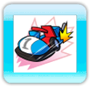
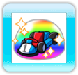
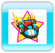
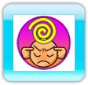

Pour utiliser un objet que vous possédez, appuyez dans n'importe quelle direction sur la croix directionnelle.
|  |
【Acceleration】 (Accélération)
<Dépassez vos limites de vitesse !>
Poussez votre kart au-delà de sa vitesse maximum pendant une courte période.
|
|  |
【Super Barrier】 (Super barrière)
<Renvoyez les attaques avec une barrière !>
Placez une barrière autour de votre kart pendant une courte période pour renvoyer les attaques de vos adversaires.
|
|  |
【Lightning】 (Eclairage)
<Rattrapez votre retard à la vitesse de la lumière !>
Pendant une courte période, des ordinateurs super puissants prennent le contrôle de votre kart et avancent à toute allure sur le circuit.
|
 |
【Bowling Bomb】 (Bombe bowling)
<Il s'agit de bien viser !>
Lancez une bombe sur vos adversaires. Quand elle retombe, elle explose et la victime perd le contrôle de son kart.
|
 |
【Oil Spill】 (Taches d'huile)
<Pour que les adversaires perdent le contrôle !>
Répandez de l'huile derrière votre kart. Quand un adversaire roule dessus, il perd le contrôle de son véhicule.
|
|  |
【Psychic Power】 (Pouvoir psychique)
<D'étranges pouvoirs s'emparent des adversaires !>
Une force psychique puissante s'empare de l'esprit de vos adversaires et prend le contrôle de leur véhicule pendant une courte période.
|